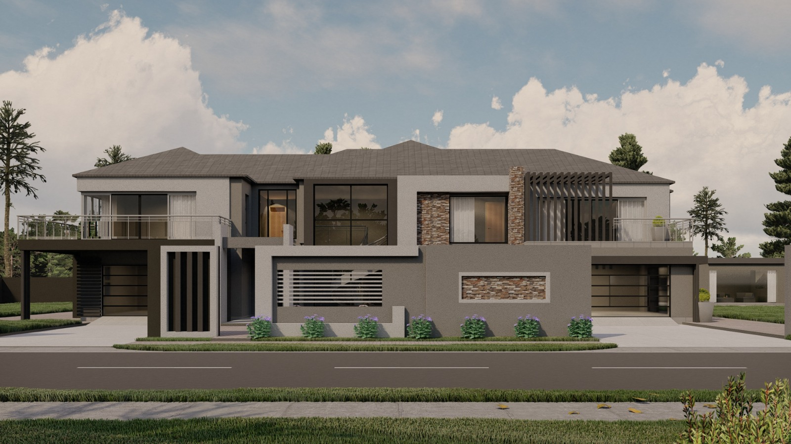

Draughtsman | Designer | CAD Specialist
Email: matimobaloyi@gmail.com
Phone: 083 665 8964
Location: Kempton Park, Gauteng
License: C1 (Code 10) | Own Transport | Non-Smoker
I am a dedicated and detail-oriented Draughtsman with 4+ years of experience in residential and industrial design. I specialize in creating accurate technical drawings, 3D modeling, and preparing complete project submissions using AutoCAD, Revit, and Rhino. My strengths lie in structural visualization, technical precision, and meeting project deadlines.
Nov 2023 – Sept 2024 | Midrand, Gauteng
Ref: Braydon Etter (CEO) | braydon@cofab.co.za | 011 315 5715
Apr 2020 – Mar 2024 | Centurion, Gauteng
Ref: Thabiso Matenchi (Owner) | info@tenchi.co.za | 076 040 7093
Certificate – Rosebank College (2020)
Full-time | Pretoria, Gauteng
Matric – Rhodesfield Technical High School (2017)
Kempton Park | Civil Technology, EGD, Math Lit
Availability: 1 Week Notice
Expected Salary (Net): R15,000 – R25,000
Vaccinated: No
The first design was built in my presence. I got to witness the building process, the challenges the builder faced on site, and the amount of work that goes into constructing a house. It was fulfilling to see something I had designed transform into a beautiful home. That was when I realized there is no greater feeling than seeing my designs become real.
Floor Plan Detail – Detailing of a house extension where the client wanted to add a garage and make a few changes. I redesigned the existing floorplan to reflect the updates. The plan was checked and approved by Mr Thabiso Matenchi.
Site plan – A detailed site plan showing positions of all structures, ERFs of surrounding houses, building lines, and exact dwelling placement. This helps builders understand the spatial layout and constraints.
Design – This house was designed by me in 2021 while I was still learning and exploring Revit. It helped unlock my creativity and expand my style beyond personal preferences to accommodate client visions.
This was designed by me in March 2025. The client requested a simple 3-bedroom house plan with a butterfly roof and a carport shelter that fits 4 vehicles.
This house will be built in Venda. The fact that the location is expected to be rural shows that modern houses are not only built in the suburbs.
